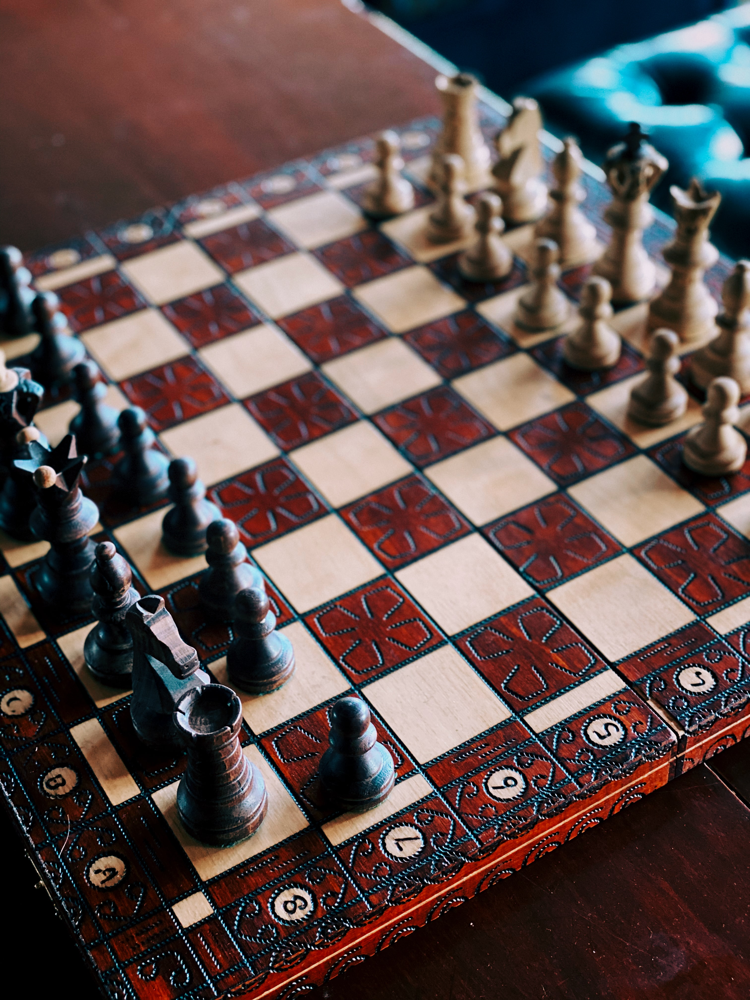

My Hobbies and Activities
Sudoku
Sudoku is a logic-based, combinatorial number-placement puzzle. In classic sudoku, the objective is to fill a 9×9 grid with digits so that each column, each row, and each of the nine 3×3 subgrids that compose the grid contain all of the digits from 1 to 9.
I love solving sudoku puzzles. Also, I have participated in many national level sudoku contests in Bangladesh.

Blood Donation
I am a regular blood donor. Also for increasing awareness in students, I have formed a Blood Donors Club at Daffodil International University in 2016. Through this club, we organized free blood grouping campaigns, motivated others to donate blood and managed blood in emergency situations.
Blood is the most precious gift that anyone can give to another person — the gift of life.
There is a constant need for regular blood supply because blood can be stored for only a limited time before use. Regular blood donations by a sufficient number of healthy people are needed to ensure that safe blood will be available whenever and wherever it is needed.
Chess
I like playing chess. Whenever I get some free time I play chess with my friends and sometime in online platforms.

Cricket
Cricket is my favorite game. I enjoy playing cricket as well as watching. I am a die-hard fan of the Bangladesh Cricket team.
Books and Poems
As a child, I was fond of Bengali fiction and travel books. After that, I discovered an interest in Bengali novels. Some of my favorite authors are Shirshendu Mukhopadhyay, Satyajit Ray, Sunil Gangopadhyay, Syed Mujtaba Ali, Anisul Hoque.
I have a profound love for Bengali poems too. I like the poems of Rabindranath Tagore, Abul Hasan, Nirmalendu Goon, Rudra Mohammad Shahidullah, Mahadev Saha, Jibanananda Das, Helal Hafiz, Rafiq Azad, Rudra Goswami.
Lately, I am reading some non-fiction books related to personal development and entrepreneurship.